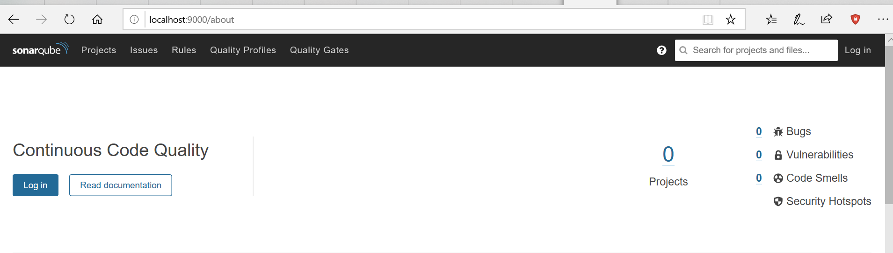
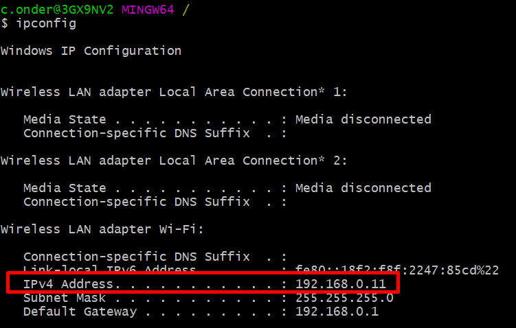
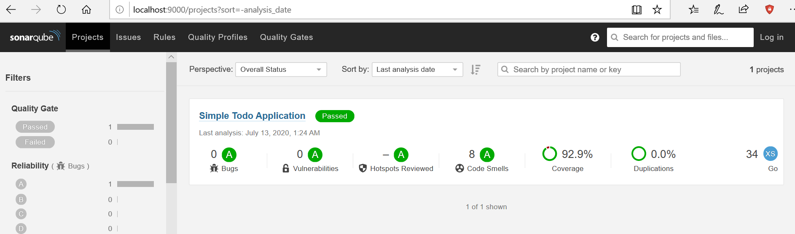

Go Sonar Integration Using Docker - Part 1
Overview
In this series, we are going to integrate a Go project with Sonar using Docker. Part 1 will be about creating a go application, writing unit tests, and generating code coverage then sending this report to SonarQube. Part 2 - TBD will be about using Sonar to fail pipeline based on the Quality report.
1. Create a Simple Todo App
Let’s first create an empty project and initialize go modules.
mkdir go-dockerized-coverage
cd go-dockerized-coverage
go mod init cemalonder.com/go/todo
Create a todo folder and todo.go file
mkdir todo
touch todo.go
And write a simple Todo App with 2 functions; Add and Complete.
// Package todo provides a simple todo application
package todo
import "errors"
// Todo representation of todo with id, title and completed status
type Todo struct {
Id int
Title string
Completed bool
}
// TodoApp holds todo list and id counter
type TodoApp struct {
todos map[int]Todo
id int
}
// CreateTodoApp creates a new TodoApp by initializing todo list and id counter
func CreateTodoApp() TodoApp {
todoApp := TodoApp{}
todoApp.todos = make(map[int]Todo)
todoApp.id = 0
return todoApp
}
// Add adds a new todo with given title and returns created todo with a new id
func (app *TodoApp) Add(title string) Todo {
app.id = app.id + 1
app.todos[app.id] = Todo{app.id, title, false}
return app.todos[app.id]
}
// Complete completes a todo with given id and
// returns todo not found exception if todo with given id is not found
func (app *TodoApp) Complete(id int) error {
if todo, ok := app.todos[id]; ok {
todo.Completed = true
app.todos[id] = todo
return nil
} else {
return errors.New("todo not found")
}
}
2. Write Unit Tests
Now let’s create some unit tests for our Todo App. My Complete function contains some business logic which I can write unit tests. I will consider business cases first, then implement them;
- When I complete a todo which exists, I expect it’s completed state is true
- When I complete a todo which does not exist, I expect an error
package todo_test
import (
"testing"
)
func TestCompleteForFoundTodo(t *testing.T) {
app := CreateTodoApp()
todo := app.Add("Wake up early")
if todo.Completed {
t.Error("Expected completed is false, but it is true")
}
err := app.Complete(todo.Id)
if err != nil {
t.Errorf("Expected error is nil, but it is %v", err)
}
if todo.Completed {
t.Error("Expected completed is true, but it is false")
}
}
func TestCompleteForNotFoundTodo(t *testing.T) {
app := CreateTodoApp()
err := app.Complete(1)
if err == nil {
t.Errorf("Expected error is not nil, but it is %v", err)
}
}
I’m following some testing conventions above which starts with TestXxx(*testing.T). And also my package name is todo_test. Since this post is about integrating Go with Sonar I will let keep them for another post, let’s continue with generating code coverage.
3. Generate Code Coverage
Let’s run and generate coverage for our project:
go test ./... -v -coverprofile=coverage.out -covermode=count -coverpkg=./...
And if summarize what is above command and its flag is doing:
- go test ./… = running all the tests in current and all sub-folders
- -v = print full output
- -coverprofile=coverage.out = write coverage to the given file, here we write to coverage.out
- -covermode=count = Sets the mode for coverage analyses, here we set to count which shows how many times statements are run
- -coverpkg=./… = apply coverage for all matching pattern, here we applied current and all sub-folders
For the detailed list of all flags for go test command, see here
Now we have a coverage.out generated in the root of the project content like this:
mode: count
cemalonder.com/go/todo/main.go:3.14,4.2 0 0
cemalonder.com/go/todo/todo/todo.go:20.30,25.2 4 2
cemalonder.com/go/todo/todo/todo.go:28.44,32.2 3 1
cemalonder.com/go/todo/todo/todo.go:36.44,37.35 1 2
cemalonder.com/go/todo/todo/todo.go:37.35,41.3 3 1
cemalonder.com/go/todo/todo/todo.go:41.8,43.3 1 1
The next step is sending this coverage to Sonar so we can visualize it.
4. Start Local SonarQube
Even you will send your reports to a Sonar instance which you have in your company’s server, let’s try everything first locally. It will be pretty easy using Docker.
Start a new SonarQube container:
docker run --rm -p 9000:9000 sonarqube
If we summarize above command;
- Installs sonarqube image if it does not exist locally
- Creates a container from this image
- Starts this container
- Forwards internal 9000 port of docker to host (localhost in this case) so you can access it via [localhost:9000]
- Removes container (–rm) when it is stopped so you don’t run out of space (you still have the image)
Now we have a locally running sonarqube with no persistency (in-memory), so you will lose your pushed reports when you restart your container but it is okay for our case since we want to test our reports.
If you visit localhost:9000 in your browser you will see local SonarQube instance with 0 projects.

We need to push our project to SonarQube. Let’s continue with the next step.
5. Configure Sonar in Project
We need some configuration in our project before we push it to the SonarQube. In the next step, we will be using SonarScanner which requires sonar-project.properties configured in the project. By default, it should be located at the root of the project. Let’s create sonar-project.properties in the root of the project and
touch sonar-project.properties
And its content is:
sonar.language=go
# This should be unique in SonarQube
sonar.projectKey=simple-todo-app
sonar.projectName=Simple Todo Application
sonar.go.coverage.reportPaths=coverage.out
sonar.exclusions=**/*_test.go
And if we summarize the properties used above:
- sonar.language = we are setting our language but SonarQube also capable of guessing it
- sonar.projectKey = this should be unique in your SonarQube instance
- sonar.projectName = this will be shown in the UI as a name of our project
- sonar.go.coverage.reportPaths = we show our coverage.out which we generated in write unit tests step
- sonar.exclusions = we are excluding _test.go files since we don’t want to get coverage of tests itself All of the properties can be found here.
We have configured our project. The last step is pushing these to the SonarQube instance.
6. Send Coverage Report to SonarQube using SonarScanner
SonarScanner is a tool used to run code analysis on SonarQube instance. To use this we should install it locally and run against our project which has code coverage generated and sonar-project.properties configured. But instead of installing locally, I would like to do this step also with Docker since SonarQube officially provides a docker image for this.
Before running the sonar-scanner-cli docker command you should get your local IP since we will need it in the next step.
For this type ipconfig if you are working in Windows or ifconfig if you are in a Linux based Operating System. Then
take note of your IPv4 Adress for the valid Adapter, in my case I’m working via Wireless so I take note of my
Wireless Lan adapter Wi-Fi which is 192.168.0.11 as follows

Now run following command in the shell (run it in PowerShell if you are in windows otherwise ${PWD} does not work)
docker run --rm -e SONAR_HOST_URL=http://192.168.0.11:9000 -v ${PWD}:/usr/src sonarsource/sonar-scanner-cli
And if we summarize above command:
- Installs sonarsource/sonar-scanner-cli image if it does not exist locally
- Creates a container from this image
- Starts this container
- Sets SONAR_HOST_URL environment variable to show where SonarQube runs
- Creates a volume from /usr/src to your local (${PWD} or give your absolute path like /c/yourUser/yourProject) so sonar-scanner-cli can use your local project and its properties (sonar-project.properties)
- Removes container (–rm) when it is stopped so you don’t run out of space (you still have the image)
In your terminal you should see an EXECUTION SUCCESS message with a log similar to this:
...More logs...
INFO: Analysis report generated in 134ms, dir size=80 KB
INFO: Analysis report compressed in 681ms, zip size=12 KB
INFO: Analysis report uploaded in 260ms
INFO: ANALYSIS SUCCESSFUL, you can browse http://192.168.0.11:9000/dashboard?id=simple-todo-app
INFO: Note that you will be able to access the updated dashboard once the server has processed the submitted analysis report
INFO: More about the report processing at http://192.168.0.11:9000/api/ce/task?id=AXNFIP_bMJij3EBEF7zK
INFO: Analysis total time: 5.375 s
INFO: ------------------------------------------------------------------------
INFO: EXECUTION SUCCESS
INFO: ------------------------------------------------------------------------
INFO: Total time: 12.923s
INFO: Final Memory: 13M/47M
INFO: ------------------------------------------------------------------------
NOTE: You can not use http://localhost:9000 instead of http://192.168.0.11:9000 since sonar-scanner-cli Docker container runs on its host and localhost for that container is not same address with localhost of yours (at least in Windows, Mac’s docker daemon may be editing etc/hosts files so users in Mac MAY be using localhost even they are working in Docker)
Now if you visit http://localhost:9000 again, you will see there is 1 project now. Click on that and here is our report:

Since Sonar has default Quality Gates configured, I’m now passing all of the scores and we have Passed status.
Summary
In this post, we write a simple Go project, generate coverage report, configure SonarScanner, and analyze our project in Sonar. The next part - TBD will be about integrating this project to Jenkins and reject our pipeline based on the project quality report.
You can find source code of this project in Github